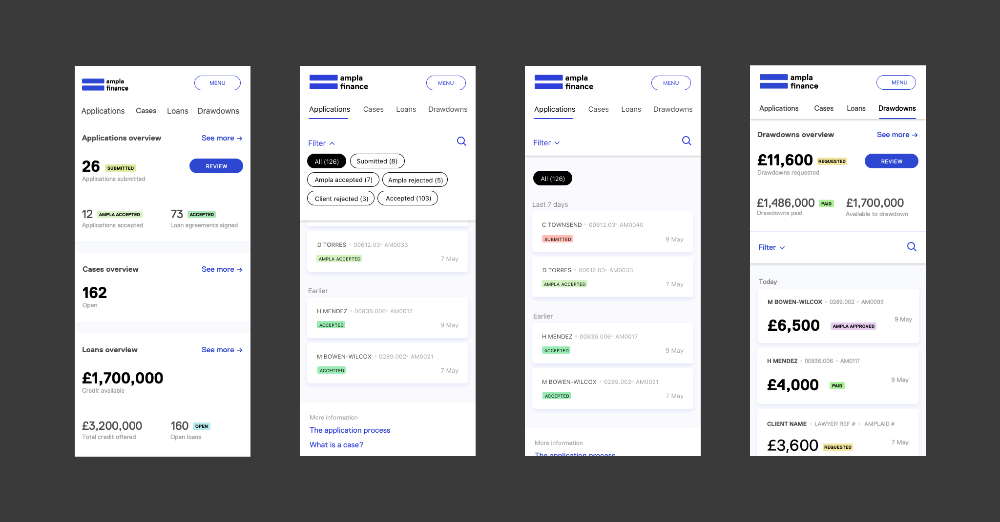
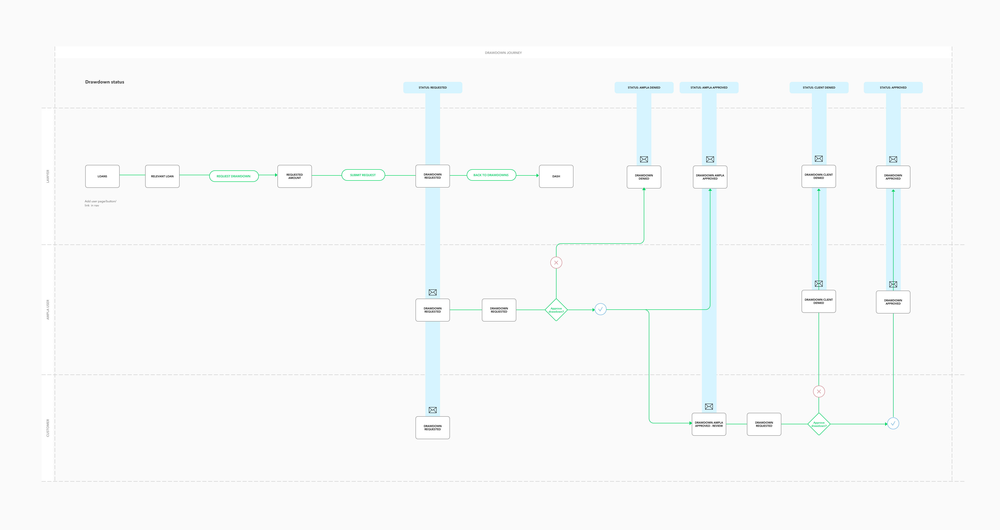
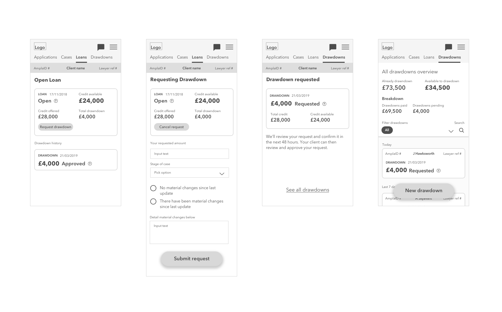
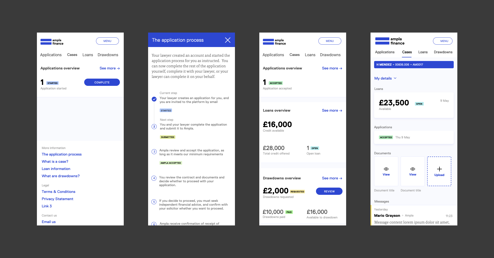
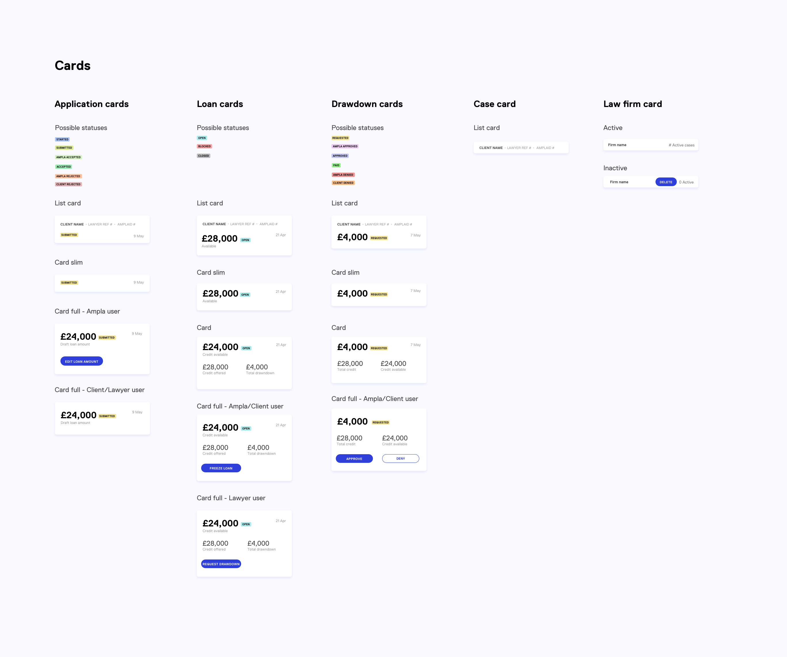
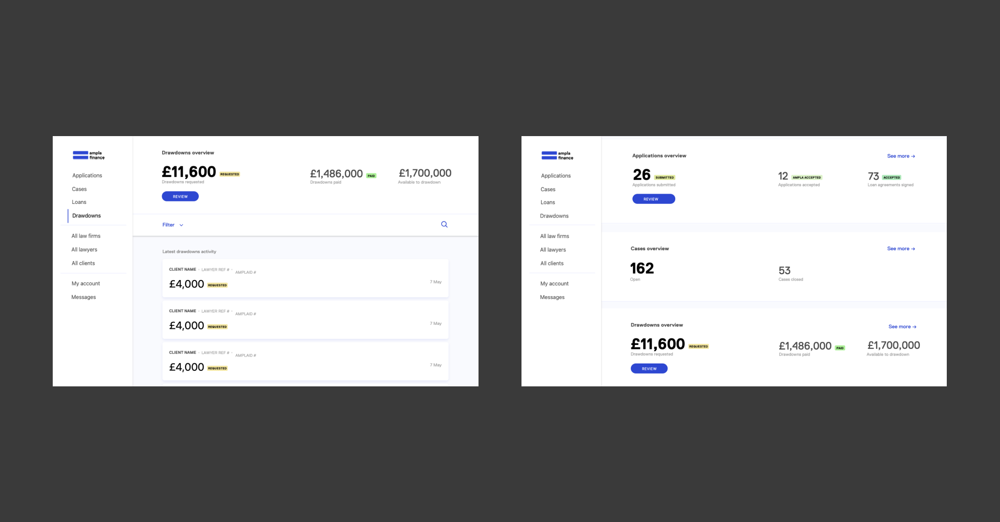
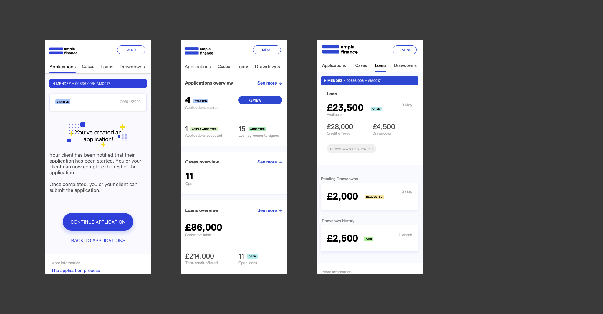

LegaltechFintechB2BB2CProduct
Ampla Finance —
What I did
Guerilla research
Prototyping
Interface design
Information architecture
Service mapping
User interviews
User journey mapping
User testing
Wireframing
Team
The commercial director and project manager at Ampla, and project manager and tech lead at Neverbland.
Context
Traditionally, the weaker party in a divorce case has to rely on expensive credit and help from family and friends to pay for their legal fees, even though the value of their settlement might provide more than enough to pay for good quality legal representation.
Ampla finance aimed to provide a 'family loan', that enabled clients to access funds while going through divorce, managed by their legal representation, and paid for from divorce proceeding settlements.
Outcome
I designed the minimum viable product (MVP) version of a new web platform that helps users access finance when going through a divorce.
Ampla ran a pilot with several law firms and clients, successfully providing loans to help divorcees pay their legal fees, and ensure they get the best legal representation they can. This led to the successful launch of the family loan product and accompanying platform.

The process
I was asked to lead the UX and UI phases of the project, after a core list of features had been scoped and agreed upon for the MVP. I was responsible for taking this list and developing it into designs for the overall structure, information architecture, functionality and interface and interactions of the service. One of the key challenges of the project was working with the lawyer user group - traditionally hard to reach and sometimes dismissive of technology. As a way around this, I conducted interviews with Ampla staff members with legal backgrounds, either as lawyers or managers within law firms, to find out more about the inner workings of a law firm. These interviews were invaluable in helping me understand how lawyers worked with clients and accounted for their time, and how digital tools fitted into their day to day practice. I was also able to learn more about the language lawyers use with their clients, and how they refer to their clients proceedings. These findings fed directly into the taxonomy we were creating, and how cases on the platform were identified.
I started to map out the key areas of the product, using user stories to inform the key journeys and make task completion as easy as possible.
The product architecture had to be flexible to meet the needs of the 3 main user groups, with certain functionalities and features being limited to certain users. For example, an Ampla user needed full admin access to effectively manage users of the platform, including list views of active users, whereas a client only needed to use features directly related to their own application and loans.

A common ground between all user groups was the core feature set of the 4 main areas required to effectively apply for, record and track progress of, and withdraw money from loans. These form a primary navigation that’s consistent across the platform, clearly signposting the main functionality and enabling all user groups to quickly complete their key tasks.
As a regulated financial service product, the application process for Ampla finance had to follow strict guidelines. The process for withdrawing money from the loan, or drawdown, also had different stages, and a back and forth between lawyer, client and Ampla, so there was a need for regular notifications, which were delivered via email. These stages needed to be communicated clearly to users, and as we couldn’t deliver in-platform notifications for the MVP, it was important that the different steps of each process were communicated clearly.


As I progressed onto developing the UI and more refined visual language, I designed a coloured tag system to clearly display the current status of the relevant item.



